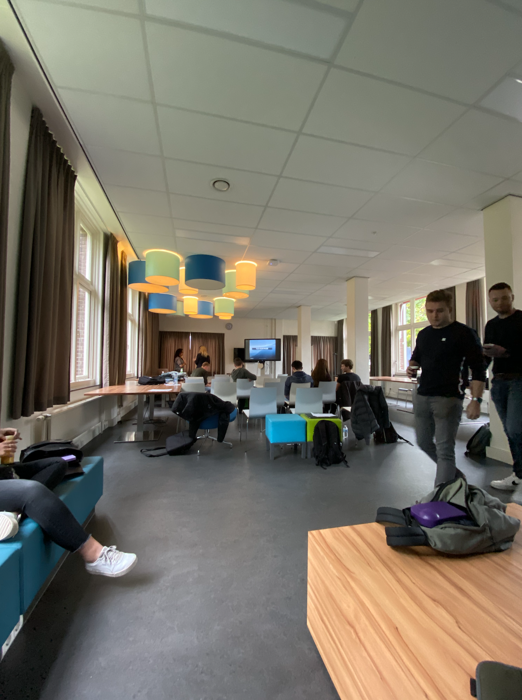
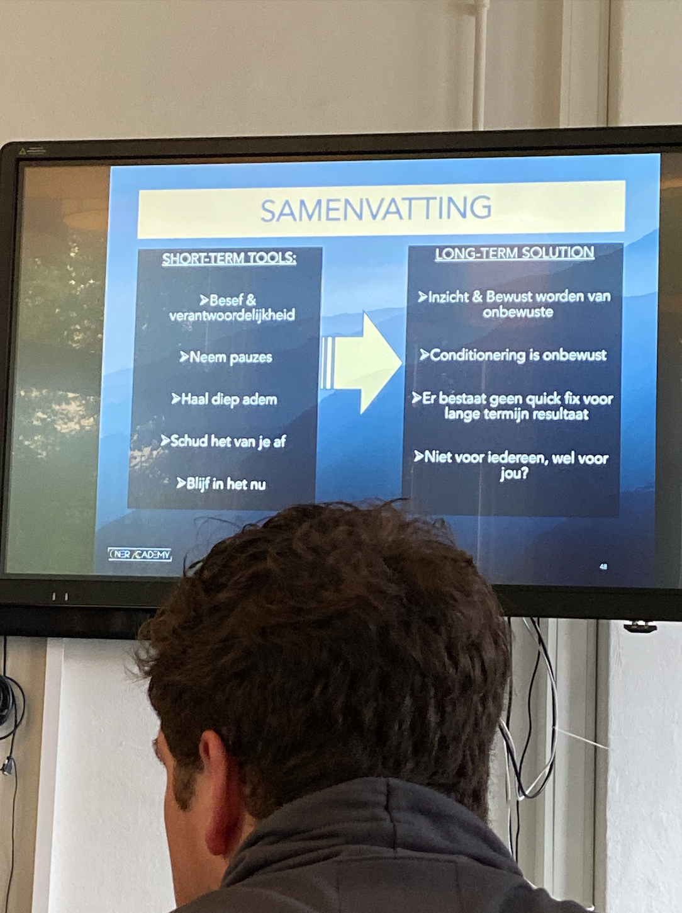
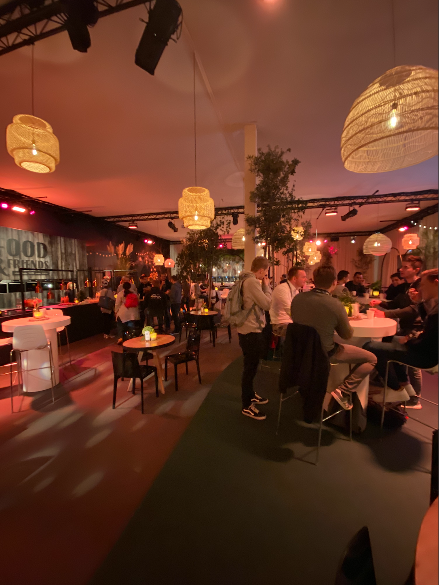
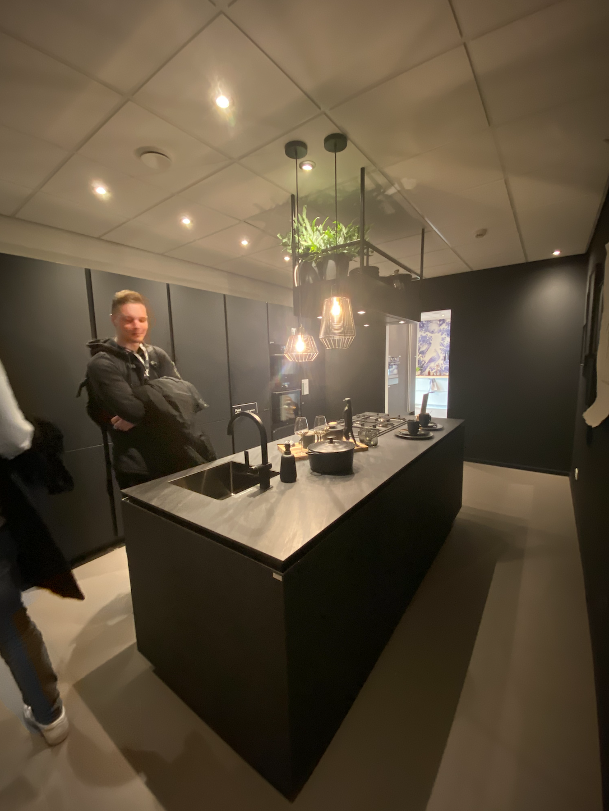
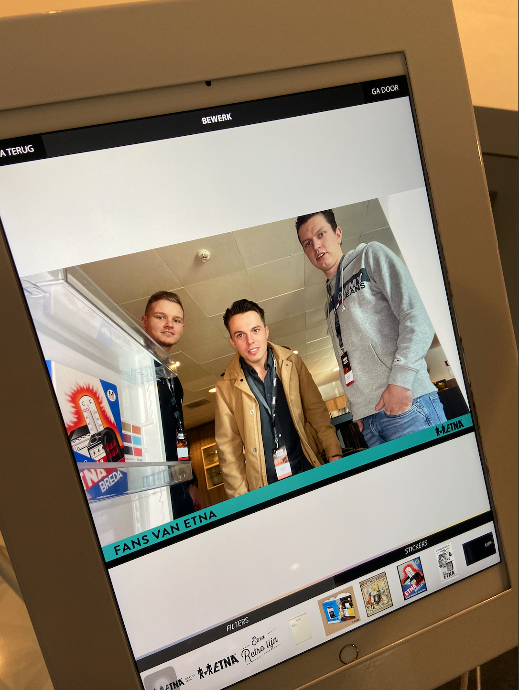
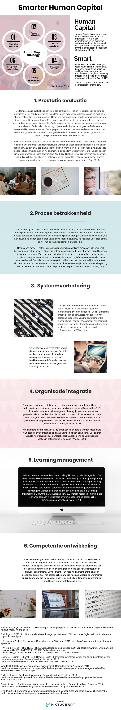
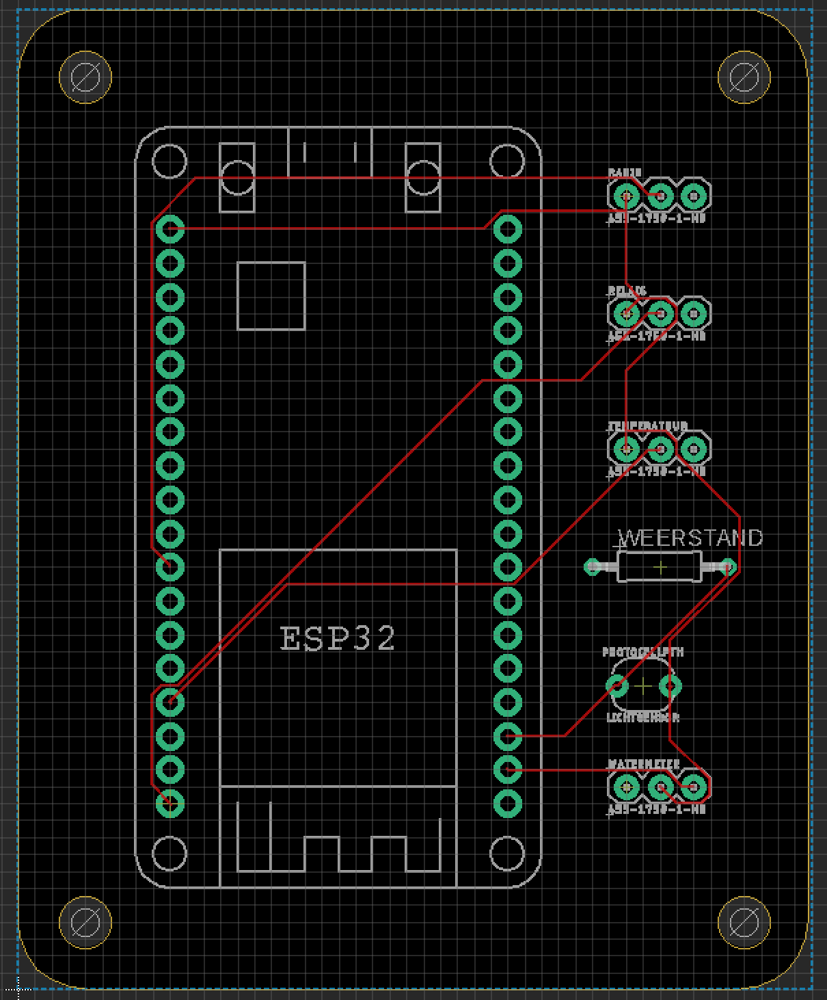

Week 6: Samenwerken
introductie
Tijdens de laatste week voor de herfstvakantie stonden er twee interessante dingen op de planning, namelijk de ATAG studenten dag en de workshop ‘Master your Mind’ van Ilke Oner. Verder stonden er weer lessen van Smart Start en Technology op de planning.
Brein en ATAG
Tijdens de les van Smart Business kregen we een workshop over het brein van Ilke Oner. Ilke is van Turkse afkomst en komt uit een achterstandswijk. Tegen alle verwachtingen in studeerde ze succesvol af aan de universiteit. Ze nam een goede baan inclusief dikke auto en flink salaris, maar kwam er na een tijdje achter dat ze voor de gek werd gehouden door haar brein. Ze kreeg een burn-out en ging uitzoeken waardoor ze die burn-out kreeg. Ze kwam erachter dat ze continue het verkeerde doel in ogen had en dat ze meer op haar gevoel en instinct moest vertrouwen. Ilke heeft ons dit mooie verhaal verteld en heeft daarna een aantal oefeningen met ons gedaan. We moesten gaan nadenken wat we belangrijk vonden en wie voor ons belangrijk zijn. Verder moesten we opschrijven wat diegene zo belangrijk maakt en waarom we zo trots op diegene waren. Als laatste deden we wat ademhaling oefeningen. Ze vertelde dat rustig ademhalen heel belangrijk is en dat heeft wel veel indruk op me gemaakt en let er nu nog steeds op iedere dag. Hieronder zijn twee foto’s van de workshop.
 De volgende dag gingen we naar de ATAG studenten dag in Duiven. We kregen hier een rondleiding op verschillende afdelingen van het bedrijf. We gingen langs bij R&D, Quality, Logistiek en Technische dienst. Het is mooi om te zien dat een van ouds Nederlands bedrijf zo groot is geworden in de wereld met ondertussen als moederbedrijf Hisense uit China. Het was vooral een informatieve dag en heb met veel bewondering geluisterd naar de opdracht van Diquan, Coen en Bram. Zij hadden namelijk gekozen voor ATAG en hun opdracht over het 3D-printen werd ons uitgelegd. Hieronder zijn een aantal foto’s van deze dag.
  Smart Start
Bij Smart Start stond weer een weekopdracht centraal. We deden met een groepje van vijf de opdracht over Human Capital. Omdat Witek en wij de Minor MSI continue willen verbeteren waren we vorige week tot de conclusie gekomen dat sommige opdrachten niet helemaal duidelijk waren. Daarom was deze week de opdracht: Hoe kun je de Human Capital smart maken? Dit hebben we gedaan door 6 begrippen uiteen te zetten en daarna geformuleerd hoe je deze Smart kan toepassen. De opdracht is hieronder te zien.
Smart Technology
In de laatste les voor de herfstvakantie van Technology gingen we de schematische weergave veranderen in een ‘Board’ weergave. Deze weergave kon uiteindelijk opgestuurd worden naar China zodat er een echt exemplaar gemaakt kon worden. Het was vooral belangrijk dat de lijntjes niet door elkaar liepen en dat alles recht op het bord stond. Mijn resultaat is hieronder te zien.
